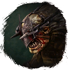
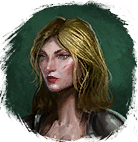

Ключ от лаборатории
Предметы / Ключи
Открыть в интерактивной вики →
| Вес | 2 |
|---|---|
| Цена | 0 |
Описание
Тщательно охраняется хобгоблинами. Открывает дверь в Лабораторию в Храме инстанс  Фёдор.
Фёдор.

Гмо иФёдор. - Ключи можно получить убив в Храме  Хобгоблин-Ключник
Хобгоблин-Ключник
- Выполнив задание у 
- Выполнив ежедневное задание "Зерно Хаоса" у  Варник (но награда меняется)
Варник (но награда меняется)
- Во время событий в игре
| Тщательно охраняется хобгоблинами. Открывает дверь в лабораторию в Храме. |
Дроп
Применение
|
Способы получения
|